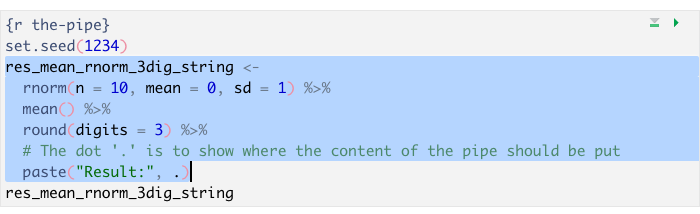
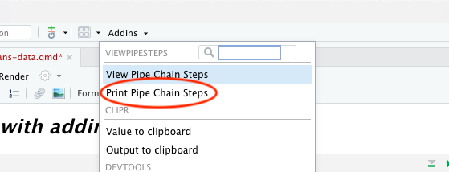
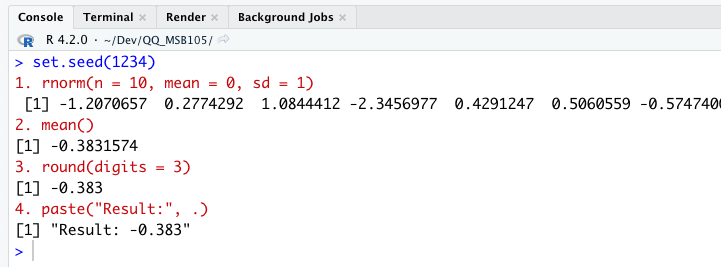

ViewPipeStepsPackage (addIn) ViewPipeSteps
easier debugging of pipes
Do it in a Quarto Document.
Copy the code from the book into your own Quarto Document.
Try to experiment with the code and write your own remarks/comment about the code and how it works.
filter(): show us just the data that satisfies one or more conditions
arrange(): sort (rearranges) the rows
select(): select some of the variables (remove the variables that does not interest us)
mutate(): make new variables in the dataframe/tibble
transmute() only keeps the new variables
rename(): change the name of a variable (this is really a variant of mutate()).
summarise() and group_by(): Group by one or more criteria and then summarise the variables (max, min, mean, median, sd etc.)dplyr package which is part of the tidyverse.nycflights13.vignette("dplyr"),
starwars dataset,
vignette("grouping"),
vignette("colwise") and
vignette("rowwise")
[1] "Result:-0.383"paste("Result:", .)?viewpipesteps
viewpipesteps cont.
viewpipesteps cont.
lm(formula, data, …) is an important counter examplefunction_name(., other arguments) is the default)tidyverse is designed to work well with the pipe
sf packages we will encounter next year are also designed to work well with tidyverse and pipesNo documentation for 'nycflights13' in specified packages and libraries:
you could try '??nycflights13'Load the nycflights13 package.
airline
airports
flights
planes
weather
? to read the help for eachflights (from help)year, month, day: Date of departure.dep_time, arr_time: Actual departure and arrival times (format HHMM or HMM), local tz.sched_dep_time, sched_arr_time: Scheduled departure and arrival times (format HHMM or HMM), local tz.dep_delay, arr_delay: Departure and arrival delays, in minutes. Negative times represent early departures/arrivals.carrier: Two letters carrier abbreviation. See airlines to get name.flight: Flight number.flights (from help) cont.tailnum: Plane tail number. See planes for additional metadata.origin, dest: Origin and destination. See airports for additional metadata.air_time: Amount of time spent in the air, in minutes.distance: Distance between airports, in miles.hour, minute: Time of scheduled departure broken into hour and minutes.time_hour: Scheduled date and hour of the flight as a POSIXct date. Along with origin, can be used to join flights data to weather data.flightsflights# A tibble: 5 × 19
year month day dep_time sched_dep_time dep_delay arr_time
<int> <int> <int> <int> <int> <dbl> <int>
1 2013 1 1 517 515 2 830
2 2013 1 1 533 529 4 850
3 2013 1 1 542 540 2 923
4 2013 1 1 544 545 -1 1004
5 2013 1 1 554 600 -6 812
# ℹ 12 more variables: sched_arr_time <int>, arr_delay <dbl>,
# carrier <chr>, flight <int>, tailnum <chr>, origin <chr>,
# dest <chr>, air_time <dbl>, distance <dbl>, hour <dbl>,
# minute <dbl>, time_hour <dttm>filter(), from r4ds# A tibble: 842 × 19
year month day dep_time sched_dep_time dep_delay arr_time
<int> <int> <int> <int> <int> <dbl> <int>
1 2013 1 1 517 515 2 830
2 2013 1 1 533 529 4 850
3 2013 1 1 542 540 2 923
4 2013 1 1 544 545 -1 1004
5 2013 1 1 554 600 -6 812
# ℹ 837 more rows
# ℹ 12 more variables: sched_arr_time <int>, arr_delay <dbl>,
# carrier <chr>, flight <int>, tailnum <chr>, origin <chr>,
# dest <chr>, air_time <dbl>, distance <dbl>, hour <dbl>,
# minute <dbl>, time_hour <dttm># A tibble: 2,636 × 19
year month day dep_time sched_dep_time dep_delay arr_time
<int> <int> <int> <int> <int> <dbl> <int>
1 2013 1 1 517 515 2 830
2 2013 1 1 533 529 4 850
3 2013 1 1 542 540 2 923
4 2013 1 1 544 545 -1 1004
5 2013 1 1 554 600 -6 812
# ℹ 2,631 more rows
# ℹ 12 more variables: sched_arr_time <int>, arr_delay <dbl>,
# carrier <chr>, flight <int>, tailnum <chr>, origin <chr>,
# dest <chr>, air_time <dbl>, distance <dbl>, hour <dbl>,
# minute <dbl>, time_hour <dttm>%in%, it’s very handy and flexible# A tibble: 7 × 19
year month day dep_time sched_dep_time dep_delay arr_time
<int> <int> <int> <int> <int> <dbl> <int>
1 2013 1 30 NA 1410 NA NA
2 2013 1 30 NA 810 NA NA
3 2013 1 30 NA 1510 NA NA
4 2013 1 30 NA 1725 NA NA
5 2013 1 30 NA 1800 NA NA
6 2013 1 30 NA 1506 NA NA
7 2013 1 30 NA 958 NA NA
# ℹ 12 more variables: sched_arr_time <int>, arr_delay <dbl>,
# carrier <chr>, flight <int>, tailnum <chr>, origin <chr>,
# dest <chr>, air_time <dbl>, distance <dbl>, hour <dbl>,
# minute <dbl>, time_hour <dttm># A tibble: 7 × 19
year month day dep_time sched_dep_time dep_delay arr_time
<int> <int> <int> <int> <int> <dbl> <int>
1 2013 1 30 NA 1410 NA NA
2 2013 1 30 NA 810 NA NA
3 2013 1 30 NA 1510 NA NA
4 2013 1 30 NA 1725 NA NA
5 2013 1 30 NA 1800 NA NA
6 2013 1 30 NA 1506 NA NA
7 2013 1 30 NA 958 NA NA
# ℹ 12 more variables: sched_arr_time <int>, arr_delay <dbl>,
# carrier <chr>, flight <int>, tailnum <chr>, origin <chr>,
# dest <chr>, air_time <dbl>, distance <dbl>, hour <dbl>,
# minute <dbl>, time_hour <dttm>== NB! not =; equal<, >, >=, <=! for negate, !near(1/5 * 5, 5/5) is FALSE| is or, ex. TRUE | FALSE is TRUE& is and, ex. TRUE & FALSE is FALSE. TRUE & TRUE is TRUE, !(TRUE & FALSE) is TRUE%in% is very handy, x %in% c(1, 3), TRUE if x is 1 or 3near() not == for double/numericnear() not == for double/numeric cont.near()1) How many flights were there in April and September (total)?
2) How many flights were there in total the first two days of a month?
3) How may flights were there during 2013 that had an arrival delay greater than or equal to 15 min., but less than 30 min.?
1) How many flights were there in April and September (total)?
2) How many flights were there in total the first two days of a month?
3) How may flights were there during 2013 that had an arrival delay greater than or equal to 15 min., but less than 30 min.?
.. Needed when using classic functions like [.ex. sum(c(1, 2, NA, 4, 5)) will return
NA.
is.na()
x == NAis.na() returns TRUE if NAsum(is.na(flights$arr_delay)) will return
9430
arrange() sorts rows# A tibble: 336,776 × 19
year month day dep_time sched_dep_time dep_delay arr_time
<int> <int> <int> <int> <int> <dbl> <int>
1 2013 1 1 517 515 2 830
2 2013 1 1 533 529 4 850
3 2013 1 1 542 540 2 923
4 2013 1 1 544 545 -1 1004
5 2013 1 1 554 600 -6 812
6 2013 1 1 554 558 -4 740
7 2013 1 1 555 600 -5 913
8 2013 1 1 557 600 -3 709
9 2013 1 1 557 600 -3 838
10 2013 1 1 558 600 -2 753
# ℹ 336,766 more rows
# ℹ 12 more variables: sched_arr_time <int>, arr_delay <dbl>,
# carrier <chr>, flight <int>, tailnum <chr>, origin <chr>,
# dest <chr>, air_time <dbl>, distance <dbl>, hour <dbl>,
# minute <dbl>, time_hour <dttm>arrange() sorts rows as pipe# A tibble: 336,776 × 19
year month day dep_time sched_dep_time dep_delay arr_time
<int> <int> <int> <int> <int> <dbl> <int>
1 2013 1 1 517 515 2 830
2 2013 1 1 533 529 4 850
3 2013 1 1 542 540 2 923
4 2013 1 1 544 545 -1 1004
5 2013 1 1 554 600 -6 812
6 2013 1 1 554 558 -4 740
7 2013 1 1 555 600 -5 913
8 2013 1 1 557 600 -3 709
9 2013 1 1 557 600 -3 838
10 2013 1 1 558 600 -2 753
# ℹ 336,766 more rows
# ℹ 12 more variables: sched_arr_time <int>, arr_delay <dbl>,
# carrier <chr>, flight <int>, tailnum <chr>, origin <chr>,
# dest <chr>, air_time <dbl>, distance <dbl>, hour <dbl>,
# minute <dbl>, time_hour <dttm>arrange() sort rows decending# A tibble: 336,776 × 19
year month day dep_time sched_dep_time dep_delay arr_time
<int> <int> <int> <int> <int> <dbl> <int>
1 2013 12 1 13 2359 14 446
2 2013 12 1 17 2359 18 443
3 2013 12 1 453 500 -7 636
4 2013 12 1 520 515 5 749
5 2013 12 1 536 540 -4 845
6 2013 12 1 540 550 -10 1005
7 2013 12 1 541 545 -4 734
8 2013 12 1 546 545 1 826
9 2013 12 1 549 600 -11 648
10 2013 12 1 550 600 -10 825
# ℹ 336,766 more rows
# ℹ 12 more variables: sched_arr_time <int>, arr_delay <dbl>,
# carrier <chr>, flight <int>, tailnum <chr>, origin <chr>,
# dest <chr>, air_time <dbl>, distance <dbl>, hour <dbl>,
# minute <dbl>, time_hour <dttm>select() selects the variables you want# A tibble: 336,776 × 4
day month year arr_delay
<int> <int> <int> <dbl>
1 1 1 2013 11
2 1 1 2013 20
3 1 1 2013 33
4 1 1 2013 -18
5 1 1 2013 -25
6 1 1 2013 12
7 1 1 2013 19
8 1 1 2013 -14
9 1 1 2013 -8
10 1 1 2013 8
# ℹ 336,766 more rowsfilter() and select() in pipe# A tibble: 6 × 4
day month year arr_delay
<int> <int> <int> <dbl>
1 1 5 2013 408
2 1 5 2013 1
3 1 5 2013 -4
4 1 5 2013 -9
5 1 5 2013 -23
6 1 5 2013 -6filter() and select() in pipe cont.[1] -8select statementsummarise() that we will cover soon.mutate# A tibble: 5 × 9
year month day gain dep_delay arr_delay distance air_time speed
<int> <int> <int> <dbl> <dbl> <dbl> <dbl> <dbl> <dbl>
1 2013 11 1 -196 -2 194 2475 336 442.
2 2013 4 18 -181 -2 179 1389 234 356.
3 2013 8 8 -165 180 345 2565 420 366.
4 2013 7 10 -161 16 177 2586 387 401.
5 2013 6 27 -157 43 200 544 120 272 ends_with()
Many helper functions and they can save a lot of time
See ?select for details
speed between dep_delay and arr_delay?mutate cont.# A tibble: 5 × 9
year month day gain dep_delay speed arr_delay distance air_time
<int> <int> <int> <dbl> <dbl> <dbl> <dbl> <dbl> <dbl>
1 2013 11 1 -196 -2 442. 194 2475 336
2 2013 4 18 -181 -2 356. 179 1389 234
3 2013 8 8 -165 180 366. 345 2565 420
4 2013 7 10 -161 16 401. 177 2586 387
5 2013 6 27 -157 43 272 200 544 120transmute()transmute()transmute()transmute() alternative to mutate() and then select()summarise() and group_by()# A tibble: 1 × 1
delay
<dbl>
1 -5arr_delay from earliersummarise() and group_by()arr_delay for each month?